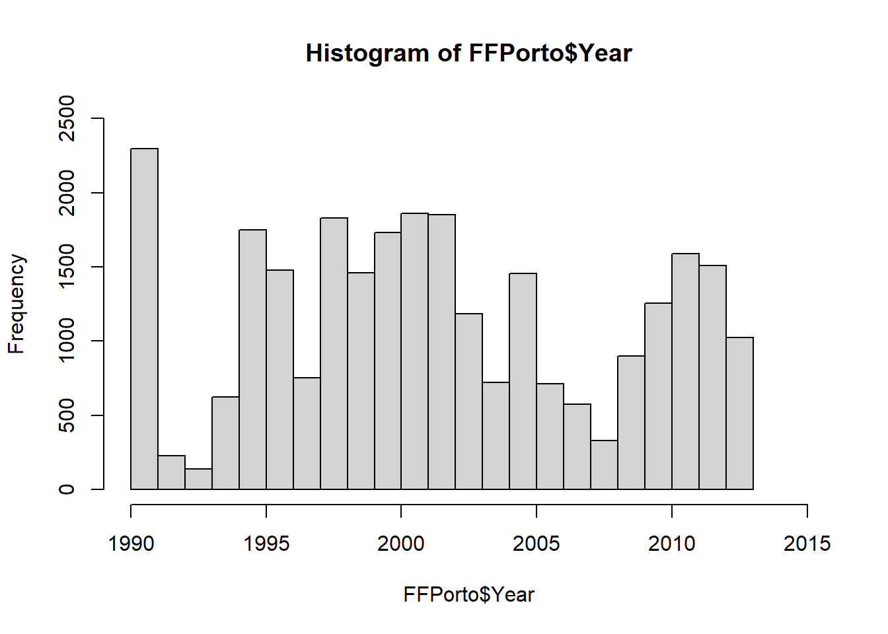
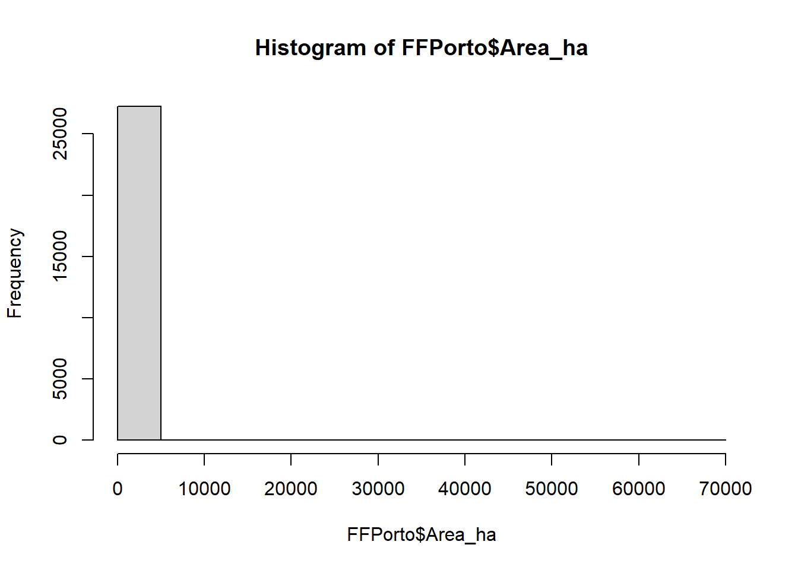
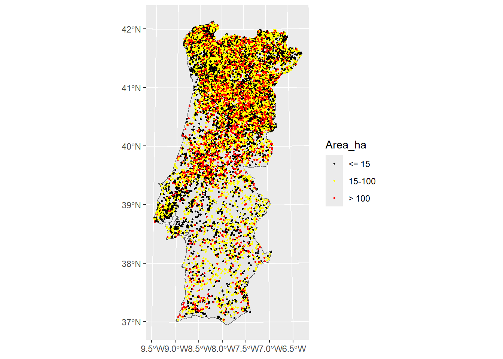
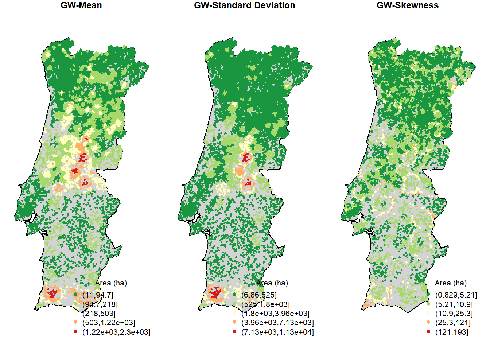

Chapter 3 Geographically Weighted Summary Statistics for Geosciences
Geographically Weighted Summary Statistics (GWSS) represent an advanced analytical approach in geosciences, allowing researchers to explore spatial variations in data across a geographical landscape. Unlike traditional summary statistics that provide a single, overall summary measure – like mean, median, or standard deviation – for the entire dataset (i.e., globally), GWSS techniques calculate these measures locally, reflecting the unique characteristics and variations at different spatial locations. This method is particularly valuable in geosciences, where spatial heterogeneity often plays a critical role.
3.1 GWSS for natural hazards assessment
In the assessment of natural hazards – like forest fires, earthquakes, flooding, or landslides – identifying hotspots is a first step in prioritizing areas for risk management and mitigation strategies. This process helps in understanding which regions are most vulnerable, allowing for the allocation of resources, implementation of protective measures, and development of emergency response plans to reduce the potential impact on communities and infrastructure.
Although spatio-temporal inventories of natural hazards are made available, extracting meaningful insights about their distribution patterns remains challenging when relying solely on the examination of mapped event locations. To address this, Geographically Weighted Summary Statistics (GWSS) can be utilized. GWSS assumes that the spatial distribution of the single occurrences within a certain area exhibits geographic trends, and calculates local statistics to reveal these patterns more clearly. This approach provides valuable insights for effective management and prevention strategies.
As case study, in the present computing lab we compute the GW local means, the GW local standard deviation and the GW localized skewness of wildfires – made available as mapped burned areas dataset – in continental Portugal, registered in the period 1990-2013. This application is inspired by the work of (Tonini et al. 2017)
3.1.1 The overall methodology
Summary statistics include a number of measures that can be used to summarize a set of observations, the most important of which are measures of central tendency (arithmetic mean, median, mode) and measures of dispersion around the mean (variance, standard deviation). In addition, measures of skewness and kurtosis are descriptors of the shape of the probability distribution function, the former indicating the asymmetry and the latter the peakedness/tailedness of the curve.
For geoenvironmental processes, these global statistical descriptors may vary from one region to another, as their values may be affected by local environmental and socio-economic factors. In this case, an appropriately localized calibration can provide a better description of the observed values. One way to achieve this goal is to weight the above statistical measures for a given quantitative variable based on their geographical location.
For the comoputation we introduce here the method proposed by (C. Brunsdon, Fotheringham, and Charlton 2002) and implemented in the function GWSS presented in the R package GWmodel (Lu et al. 2014; Isabella Gollini et al. 2015).
The evaluation of geographically weighted summary statistics is obtained by computing a summary for a small area around each geolocalized punctual observation, by using the Kernel Density Estimation technique (KDE) (Chris Brunsdon 1995). KDE is estimated at each point, taking into account the influence of the points falling within an area, with increasing weight towards the center, corresponding to the point location. A surface summary statistic is thus obtained.
3.1.2 Forest fires dataset
Forest fires inventories indicating the location, the starting date and other related variables, such as the cause of ignition and the size of the area burned, are broadly available with a different degree of accuracy in different countries.
In the present study, we consider the Portuguese National Mapping Burnt Areas dataset , freely available from the website of the Institute for the Conservation of Nature and Forests. This is a long spatio-temporal dataset resulting from the processing of satellite images acquired once a year at the end of the summer season. Row data consists of records of observed fire scars. The burned areas were estimated by using image classification techniques, then compared with ground data to resolve the discrepancies. Polygons have been converted into a point vector dataset, where each point represent the centroid of the burned areas, while the size of the burned areas and the starting date of the fires events are given as attributes.
In this work, for consistency reasons, we consider only fires occurred between 1990 and 2013, and with a burned area above 5 hectares.
3.2 Computing lab: GWSS
3.2.1 Load the libraries
First you have to load the following libraries:
- splancs: for display and analysis of spatial point pattern data
- GWmodel: techniques from a particular branch of spatial statistics, termed geographically-weighted (GW) models
- sf: support for simple features, a standardized way to encode spatial vector data
- ggplot2: a system for ‘declaratively’ creating graphics
- sp: classes and methods for spatial data
3.2.2 Import the forest fire dataset
In this section you will load the geodata representing the forest fires inventory for events occurred in the continental Portuguese area in the period 1990-2013. You will also load the boundaries of the study area. You will start by exploring the datasets using mainly visual tools (plotting and histogram).
# Import Portugal boundary
Portugal <- st_read("data/GWSS/Area_Portugal.shp")
# Import the Portuguese forest fires dataset for the entire Portuguese area.
FFPorto<-st_read("data/GWSS/FF_Portugal.shp")You can explore the dataset by using different tools for exploratory data analyses. You will start by visualizing the databases (i.e., the attribute table). Than you can plot the histogram of events distribution based on the variable “Area_ha” (i.e., the size in hectares of the burned area). Since this is a power low distribution, for a better understanding it is recommended to transform the data using a logarithmic scale. Computiong log10 you can easily evaluate the frequency distribution of the burned areas.
## Simple feature collection with 27273 features and 4 fields
## Geometry type: POINT
## Dimension: XY
## Bounding box: xmin: 82126.92 ymin: 7083.529 xmax: 361492.2 ymax: 573192.5
## Projected CRS: Lisboa_Hayford_Gauss_IGeoE
## First 10 features:
## Year Area_ha X Y geometry
## 1 1990 5.000 275224.0 525501.4 POINT (275224 525501.4)
## 2 1990 5.000 235278.0 452412.9 POINT (235278 452412.9)
## 3 1990 5.000 200628.8 491568.2 POINT (200628.8 491568.2)
## 4 1990 5.000 120687.8 228816.9 POINT (120687.8 228816.9)
## 5 1990 5.031 207183.9 498247.7 POINT (207183.9 498247.7)
## 6 1990 5.031 162730.0 488388.8 POINT (162730 488388.8)
## 7 1990 5.031 250545.2 532563.7 POINT (250545.2 532563.7)
## 8 1990 5.031 268013.3 356110.4 POINT (268013.3 356110.4)
## 9 1990 5.033 222095.7 543059.9 POINT (222095.7 543059.9)
## 10 1990 5.044 207265.7 377657.8 POINT (207265.7 377657.8)# Open the attribute table in a new tab
View(FFPorto)
# Summary statistics of all of the attributes associated with this dataset
summary(FFPorto$Area_ha)## Min. 1st Qu. Median Mean 3rd Qu. Max.
## 5.00 9.78 20.41 107.14 56.07 66070.63# Histogram of the forest fires distribution by year
hist(FFPorto$Year, breaks = unique(FFPorto$Year), xlim=c(1990,2015), ylim=c(0,2500))
# Histogram of the forest fires distribution by burned area
hist(FFPorto$Area_ha) #power low disrtibution

3.2.3 Forest fires spatial distribution
For a better understanding of the phenomenon, you can group the events according to the size of the burned areas. Base on a mix of empirical experience and the frequency distribution of forest fires presented in our dataset, by area, the following three classes can be defined:
- Small fires: less than 15 ha
- Medium fires: between 15 ha and 100 ha
- Large fires: bigger than 100 ha
Plotting the forest fire events using different colors, based on the size of the burned areas, can simplify the understanding of their pattern distribution, knowing that fires of different size have normally different drivers.

3.2.4 Compute the GWSS
From the exploratory data analysis performed above, it seems that a simple plotting of the forest fires events based on their spatial distribution, even if classified based on their size, can not really help to understand their spatial behaviors. This is because we face to a huge number of events and the variable that we are using to characterize them – the size of the burned area, in our case – is very heterogeneous. To this aim, we can compute basic and robust GWSS and plot the data accordingly.
The GWSS includes geographically weighted means, standard deviations and the skweness. As you can see from the R Documentation – command: help(gwss) – same data manipulations are necessary to transform the forest fires dataset into a compatible data frame format.
# Transform inputs data into a spatial points data frame
FFdf<-data.frame(X=FFPorto$X, Y=FFPorto$Y, Area=FFPorto$Area_ha)
FFspdf<-SpatialPointsDataFrame(FFdf[,1:2], FFdf)
str(FFspdf)GWSS parameters:
- we summarize the data based on the size of the burned area (
vars) - we use here an adaptive kernel where the bandwidth (
bw) corresponds to the number (100 in this case) of nearest neighbors (i.e.adaptivedistance) - we keep the default values for the other parameters
3.2.5 Look at the results
The resulting object (FFgwss) has a number of components. The most important one is the spatial data frame containing the results of local summary statistics for each data point location, stored in FFgwss$SDF (that is a spatial data frame).
## ***********************************************************************
## * Package GWmodel *
## ***********************************************************************
##
## ***********************Calibration information*************************
##
## Local summary statistics calculated for variables:
## Area
## Number of summary points: 27273
## Kernel function: bisquare
## Summary points: the same locations as observations are used.
## Adaptive bandwidth: 100 (number of nearest neighbours)
## Distance metric: Euclidean distance metric is used.
##
## ************************Local Summary Statistics:**********************
## Summary information for Local means:
## Area_LM
## Min. 1st Qu. Median 3rd Qu. Max.
## 10.97782 42.54450 70.89374 120.67898 2300.80424
## Summary information for local standard deviation :
## Area_LSD
## Min. 1st Qu. Median 3rd Qu. Max.
## 6.856477 74.310044 149.714657 292.508111 11280.136286
## Summary information for local variance :
## Area_LVar
## Min. 1st Qu. Median 3rd Qu. Max.
## 4.701127e+01 5.521983e+03 2.241448e+04 8.556100e+04 1.272415e+08
## Summary information for Local skewness:
## Area_LSKe
## Min. 1st Qu. Median 3rd Qu. Max.
## 0.829069 3.178626 4.373189 6.076042 192.906106
## Summary information for localized coefficient of variation:
## Area_LCV
## Min. 1st Qu. Median 3rd Qu. Max.
## 0.6245756 1.5756289 2.0240543 2.6604986 16.0254231
##
## ************************************************************************## coordinates Area_LM Area_LSD Area_LVar Area_LSKe Area_LCV
## 1 (275224, 525501.4) 56.46496 127.16616 16171.2316 4.612383 2.2521253
## 2 (235278, 452412.9) 89.17704 196.51574 38618.4344 4.384154 2.2036585
## 3 (200628.8, 491568.2) 25.64396 25.02941 626.4712 2.851515 0.9760351
## 4 (120687.8, 228816.9) 16.37948 17.85761 318.8941 3.435847 1.0902427
## 5 (207183.9, 498247.7) 46.54590 84.45980 7133.4579 4.465928 1.8145489
## 6 (162730, 488388.8) 28.54313 35.14293 1235.0258 2.400911 1.23122213.2.6 GWSS maps
To produce a map of the local geographically weighted summary statistic of your choice, firstly we need to enter a small R function definition. This is just a short R program to draw a map: you can think of it as a command that tells R how to draw a map (from (Chris Brunsdon 2015) ). The advantage of defining a function is that the entire map can now be drawn using a single command for each variable, rather than having to repeat those steps each time. To define the intervals for the classification, we use Jenks natural breaks classification method (style="fisher").
library(RColorBrewer) #a useful tool for designing map color palettes.
library(classInt) #to define class intervals
# The function definition to draw the map:
quick.map <- function(spdf,var,legend.title,main.title) {
x <- spdf@data[,var]
int <- classIntervals(x, n=5, style="fisher")
cut.vals<-int$brks
x.cut <- cut(x,cut.vals)
cut.levels <- levels(x.cut)
cut.band <- match(x.cut,cut.levels)
colors <- rev(brewer.pal(length(cut.levels), "RdYlGn"))
par(mar=c(1,1,1,1))
plot(Portugal$geometry,col='lightgrey')
title(main.title)
plot(spdf,add=TRUE,col=colors[cut.band],pch=16, cex=0.5)
legend("bottomright",cut.levels,col=colors,pch=16,bty="n",title=legend.title)
}
# Call the function to display the maps of the Local Mean (LM), Local Standard Deviation(LS), and Local Skweness (LSKe)
par(mfrow=c(1,3))
quick.map(FFgwss$SDF, "Area_LM", "Area (ha)", "GW-Mean")
quick.map(FFgwss$SDF, "Area_LSD", "Area (ha)", "GW-Standard Deviation")
quick.map(FFgwss$SDF, "Area_LSKe", "Area (ha)", "GW-Skewness")
3.3 Conclusions and further analyses
This practical computer lab allowed you to familiarize with GWSS, by the proposed application about geographically weighted summary statistics. This approach allowed us to explore how the average burned area vary locally through Continental Portugal in the period 1990-2013.
The global Geographically Weighted (GW) mean informs us about the local average value of the burned area, based of the neighboring events occurred in a given period. Similarly, the GW standard deviation allows to inspect the extent to which the size of the burned area spread around this mean. Finally, the GW skewness measures the symmetry of the distribution: a positively skewed distribution means that there is a high number of observations with mean value lower that the median; and the contrary for a negatively skewed distribution.
To ensure that everything is perfectly clear, we propose you to answer the following questions. You can find the correct responses in the reference paper (Tonini et al. 2017).
Describe the pattern distribution of the GW-Mean for burned area in Portugal during the investigated periods.
Does the GW-Standard Deviation follows the same pattern? How can you interpret these two pattern distributions in terms of burned area and their characterization?
The GW-Skewness has positive values everywhere: what does it means? What do these values suggest to be the distribution of the burned areas, in terms of their size, around the local mean?
Which can be other applications of GWSS in geosciences data? In other words, can you imagine other geo-environmental dataset that can be analysed using GWSS?
Finally, you can play with the code and try to run it using a different numbers of nearest neighbors (
bw=x) and compare the results.